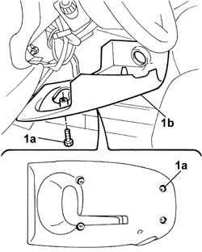
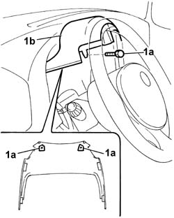

7040A26 steering column trim - r+r
- Path
- Procedures > 70 FITTINGS > 7040 BODYSHELL INTERIOR TRIMS AND FITTINGS > 7040A passenger compartment trim > 7040A26 steering column trim - r+r
- Kind
- repair procedure (removal / refitting; the operation number is the code)
- Applies to
- all engines; all production periods
- Interactive page
- https://sloeber94.github.io/elrnDB-fDbl/en/#/2585134
Applies to: all engines; all production periods
 Removing
Removing
 Refitting
RefittingDisconnect the battery negative terminal.
1. Undo the bolts (1a) and remove the lower protection (1b).

Applies to: all engines; all production periods
1. Undo the bolts (1a) and remove the upper protection (1b).

Applies to: all engines; all production periods
Refitting
RemovingPosition the upper cover and secure it using the bolts.
Position the lower cover and secure it using the bolts.
Connect the battery negative terminal.
Topics that link to this page (30)
- S61 DASHBOARD CREAKING
- 4110A30 Steering control shaft SUPPORT - R.R.
- 4110A31 Steering control shaft SUPPORT - R.R. for versions with Air Bag
- 5020A10 heater box - r+r
- 5020A40 heater fan motor selector - r+r
- 5020A50 heater radiator - r+r
- 5020B10 heater control support - r+r
- 5020B35 outdoor/recirculation air intake flap control cable - r r
- 5020B38 air distribution flap control cable - r+r
- 5020B42 air mixer flap control cable - r+r
- 5020B80 heater system wiring bundle - r r or replace
- 5040B22 air conditioning system de-mister thermostat - r+r
- 5040C10 air conditioner box - r+r
- 5040C40 air conditioner fan motor switch - r r
- 5040C50 air conditioner heater radiator - r+r
- 5040C64 a/c evaporator - r+r
- 5040D10 air conditioner control support - r+r
- 5040D35 air intake / recirculation flap cable - r r
- 5040D40 air mixer flap control cable - r + r
- 5505C26 bonnet wiring - r r
- 5505C28 intergrated engine bay and abs system wiring - r r
- 5505C31 under-facia wiring - r r
- 5505C41 cabin wiring - r r
- 5550A10 stalk unit assembly - r+r
- 5550A12 complete stalk unit - r+r for versions with air bag
- 5560B11 analogue control panel - r+r or replace
- 7040A10 instrument facia trim - r+r
- 7040A48 side bracket of beam supporting instrument and control facia one lh or rh r r
- 7040A97 facia trim support beam - r r
- 7040L17 passenger compartment floor front carpet - r r